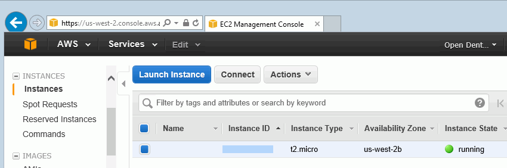

Self-Directed Cloud Hosting
Below are general guidelines for setting up self-directed cloud hosting.
For Open Dental Cloud, hosted by Open Dental, see Open Dental Cloud.
Cloud Based Server
Set up a cloud hosted server, then connect to an Open Dental server using Middle Tier.
This option requires the practice's IT company to setup and maintain the hosted server. There are a few companies who offer virtual servers that can be used to set up the Middle Tier:
- Amazon Web Service (AWS): aws.amazon.com
- Rackspace (virtual server provider): www.rackspace.com
To store images and documents in the cloud, see Dropbox.
If deciding to utilize a cloud service, please be aware of the security concerns and restrictions. Setting up a cloud environment requires a good internet connection, a VPN, secure certificates, and a cloud storage server. Ensure IT takes all necessary security concerns into consideration.
Setup
At Open Dental we have set up a test cloud server environment using Amazon Web Service's Free Tier account, and the EC2 Amazon Elastic Compute Cloud web service (Amazon EC2). Below are the general setup steps we followed.
- Sign up for a free Tier account. This is free for one year and a good way to test. https://aws.amazon.com/free/?nc2=h_l2_cc
- Choose the virtual server hosting product to try. We selected EC2 Amazon and received a key pair consisting of a public key stored by AWS and a private key stored by us. Together, the key pair allows users to securely connect to the unique cloud server (called an instance).
- For Windows AMIs, the private key file is required to obtain the password used to log into the instance.
- For Linux AMIs, the private key file allows users to securely SSH into the instance.
- Log in to the Amazon Web Service Account.
- Select EC2 Amazon to open the EC2 Management Console. Make sure the correct region is selected in the upper right corner.

- Create an instance (each unique cloud server is one instance). One instance is allowed in the free account. If more than one is created, there may be charges.
 - Assign a static IP address to the instance to make the cloud server IP address permanent.
- In the left panel, click Elastic IPs under Network & Security.
- Click Allocate New Address, then assign the correct instance to the new elastic IP. Note: If an elastic IP is assigned to a virtual server, that server must be left on at all times. Otherwise, they will charge for the elastic IP.


- In the left panel, click Instances. Make sure the instance has started. Right-click on the instance, click Instance State and verify Start is selected (grayed out).
- Connect to the instance. Right-click on the instance, then click Connect.

- Click Download Remote Desktop File. Windows Remote Desktop Connection can also be used. Login as needed to access the cloud server.
- Set up the Middle Tier.